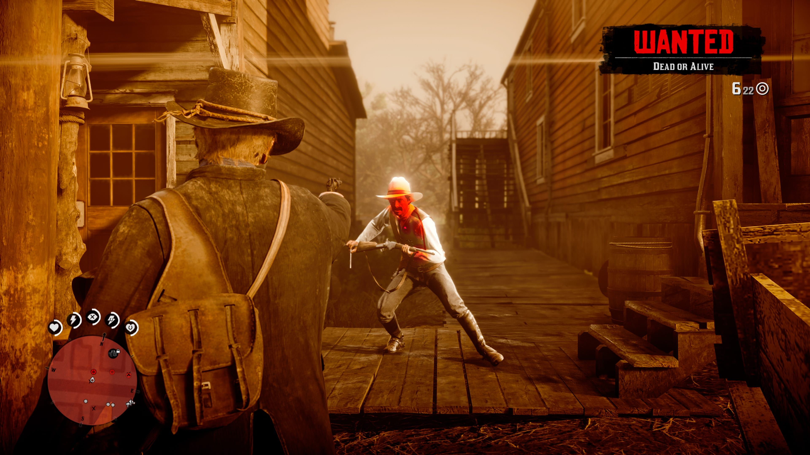
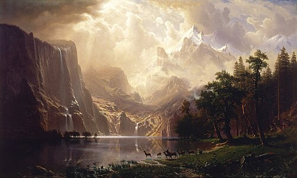
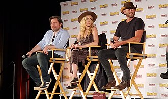
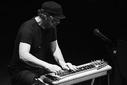

Tudo sobre Red Dead Redemption 2

Red Dead Redemption 2 (estilizado Red Dead Redemption II) é um jogo eletrônico de ação-aventura desenvolvido e publicado pela Rockstar Games. É o terceiro título da série Red Dead e uma prequela de Red Dead Redemption, tendo sido lançado em para PlayStation 4 e Xbox One em para Microsoft Windows e Google Stadia. A história se passa em 1899 em uma representação ficcional do oeste,meio-oeste e sul dos Estados Unidos e acompanha o fora da lei Arthur Morgan, que precisa lidar com o declínio do Velho Oestee sobreviver à perseguição de forças governamentais, gangues rivais e outros adversários.
A jogabilidade é apresentada tanto em uma perspectiva em primeira quanto em terceira pessoa, com o jogador sendo livre para explorar e interagir com o mundo aberto. Elementos de jogabilidade incluem tiroteios, assaltos, caça, cavalgadas, interação com personagens não jogáveis e gerenciamento da honra do protagonista por meio de escolhas morais e atos. Um sistema de recompensa similar àquele presente na série Grand Theft Auto governa as respostas da polícia e caçadores de recompensa aos crimes cometidos pelo jogador. Um modo multijogador chamado de Red Dead Online estreou em .
O desenvolvimento do título começou logo depois do lançamento de Red Dead Redemption em 2010 e foi compartilhado entre todas desenvolvedoras da Rockstar Games ao redor do mundo. A equipe se inspirou em locais reais, focando-se na criação de uma reflexão fiel do período temporal por meio dos personagens e do mundo de jogo. Red Dead Redemption 2 foi o primeiro jogo da Rockstar Games desenvolvido especificamente para os consoles da oitava geração. A trilha sonora original inclui músicas orquestrais compostas por Woody Jackson e várias faixas vocais produzidas por Daniel Lanois.
Red Dead Redemption 2 foi amplamente antecipado pré-estreia, tendo batido vários recordes e tornado-se o segundo maior lançamento da indústria do entretenimento. Ele arrecadou mais de 725 milhões de dólares em seu fim de semana de estreia e superou as vendas totais do primeiro Red Dead Redemption em apenas duas semanas, já tendo vendido mundialmente mais de 74 milhões de cópias até . Ele foi aclamado pela crítica especializada, com elogios direcionados para sua história, personagens, mundo aberto e nível de detalhes. Considerado por múltiplas publicações como um dos melhores jogos eletrônicos de todos os tempos, Red Dead Redemption 2 também venceu diversos prêmios de final de ano, incluindo alguns de Jogo do Ano.
Jogabilidade

Red Dead Redemption 2 é um jogo eletrônico de ação-aventura com temática faroeste. Jogado numa perspectiva de primeira ou terceira pessoa,o jogo se passa em um ambiente de mundo aberto, apresentando uma versão fictícia do Oeste, do Centro-Oeste e do Sul dos Estados Unidos em 1899,durante a segunda metade da era do Velho Oeste e a virada para o século XX. O jogo apresenta modos para um jogador e multijogador on-line,este último lançado sob Red Dead Online. Na maior parte do jogo, o jogador controla o fora-da-lei Arthur Morgan, um membro da gangue Van der Linde,a fim de concluir várias missões — cenários lineares com objetivos definidos — para progredir na história; no epílogo do jogo, o jogador controla John Marston. Fora das missões, o jogador pode percorrer livremente em seu mundo interativo. O jogador pode entrar em combate com inimigos usando ataques corpo a corpo, armas de fogo, armas impulsoras ou explosivos. O combate foi refinado a partir de seu antecessor, e as novas mecânicas notáveis consistem em empunhadura dupla e na capacidade de usar um arco. Ao contrário do jogo anterior, o jogador tem a capacidade de nadar.
As terras inexploráveis de Red Dead Redemption 2 compõe a maior parte do mundo do jogo e apresenta diversas paisagens, além de viajantes ocasionais, bandidos, e animais selvagens. Existem locais urbanos no jogo, variando de fazendas a vilas e cidades. Cavalos são os principais meios de transporte, dos quais existem várias raças, cada uma com atributos diferentes. O jogador deve treinar ou domar um cavalo selvagem para usá-lo, exceto cavalos roubados; no entanto, eles devem selar um cavalo para adquirir propriedade sobre ele. O aumento do uso de um cavalo iniciará um processo de união, que pode ser aumentado pela alimentação e limpeza do animal, com o jogador obtendo vantagens ao montar seu cavalo. Também podem ser usados carruagens e trens para viajar. O jogador pode sequestrar um trem ou uma carruagem ameaçando o motorista ou os passageiros e depois roubá-los.
O jogador também pode testemunhar ou participar de eventos aleatórios encontrados ao explorar o mundo do jogo. Isso inclui emboscadas, crimes cometidos por outras pessoas, pedidos de assistência, tiroteios, execuções públicas e ataques de animais. Por exemplo, à medida que o jogador explora o Velho Oeste, ele pode encontrar pessoas específicas em perigo. Se o jogador decidir ajudá-las, será gratificado e poderá recompensá-lo se cruzá-lo novamente. O jogador também pode participar de atividades paralelas, que incluem pequenas tarefas com companheiros e estranhos, duelos, caça a recompensas, busca de tesouros ou outros itens colecionáveis ao redor do mapa, como esculturas em pedra, jogo de pôquer, blackjack, dominó e jogo de faca. A caça de animais também desempenha um papel importante no jogo, fornecendo comida, renda e materiais para a criação de itens. Ao caçar, o jogador precisa levar em consideração vários fatores, incluindo a escolha da localização da arma e do tiro, que afetam a qualidade da carne e da pele e, posteriormente, os comerciantes de preços estão dispostos a pagar. O jogador pode esfolar o animal imediatamente ou carregar a carcaça, que apodrece com o tempo e diminui seu valor e atrai predadores.
O jogo se concentra fortemente na escolha do jogador para a história e missões. Certos momentos da história darão ao jogador a opção de aceitar ou recusar missões adicionais e modelar levemente o enredo em torno de suas escolhas. O jogador pode se comunicar com qualquer personagem não jogável (NPC) de maneiras dinâmicas novas para a série. O jogador pode escolher diferentes árvores de diálogo com os NPCs, como ter um bate-papo amigável ou insultá-los. Se o jogador escolher matar um NPC, ele pode saquear seu cadáver. Red Dead Redemption 2 retorna com o sistema de honra de seu antecessor, medindo como as ações do jogador são percebidas em termos de moralidade. Escolhas e ações moralmente positivas, como ajudar estranhos, cumprir a lei e poupar oponentes em um duelo, contribuem para a honra do jogador. No entanto, ações negativas, como roubo e danos a inocentes, serão subtraídas da honra do jogador. A história é influenciada pela honra, pois o diálogo e os resultados para o jogador geralmente diferem com base no nível de honra. Atingir marcos para o nível de honra do jogador concederá benefícios exclusivos, como recompensar o jogador com roupas especiais e grandes descontos nas lojas. Um nível baixo de honra também é benéfico, pois o jogador receberá um número maior de itens dos cadáveres saqueados.

Manter Arthur e John é importante, pois eles podem sofrer condições que afetam seus atributos de saúde e resistência. Além de uma barra desses atributos, o jogador também possui núcleos, que afetam a taxa na qual sua saúde e resistência se regeneram. Por exemplo, usar roupas mais quentes significa evitar o congelamento em um ambiente frio, mas usá-las em um ambiente quente resultará em transpiração. O congelamento ou superaquecimento drenará rapidamente os núcleos. O jogador também pode ganhar ou perder peso, dependendo de quanto ele come; um personagem com baixo peso terá menos saúde, mas com um aumento de resistência, enquanto um personagem com excesso de peso será capaz de absorver melhor o dano, mas terá menos resistência. O jogador pode comer e dormir para reabastecer seus núcleos. O jogador pode tomar banho para se manter limpo e pode visitar um barbeiro para trocar de penteado; o cabelo também cresce realisticamente com o tempo. O jogo apresenta degradação de armas, com elas requerindo limpeza para manter seu desempenho. Quando o jogador usa um determinado tipo de arma por um longo período de tempo, ele se torna mais experiente, o que melhora o manuseio da arma, reduz o recuo e aumenta a taxa de recarga.
Os tiroteios são uma mecânica essencial no jogo. O jogador pode se esconder, mirar livremente e mirar em uma pessoa ou animal. Partes individuais de um corpo também podem ser direcionadas para derrubar alvos sem matá-los. Quando o jogador atira em um inimigo, as reações e movimentos da IA do jogo dependem de onde foram atingidos. As armas consistem em pistolas, revólveres, espingardas, rifles, arcos, explosivos, lassos, Gatlings e armas brancas, como facas e machados. Red Dead Redemption 2 traz de volta a mecânica do Dead Eye, um sistema de mira que permite que o jogador diminua o tempo e marque alvos. Quando a sequência de direcionamento termina, o jogador dispara para todos os locais marcados em um espaço de tempo muito curto. O Dead Eye é atualizado à medida que o jogador avança no jogo e concede ao jogador mais habilidades, como ser capaz de identificar os pontos fatais de seus inimigos.
O sistema de recompensas também retorna de Red Dead Redemption, uma mecânica que governa o crime inspirado no sistema de procurado da série Grand Theft Auto. Quando um jogador comete um crime, as testemunhas correm para a delegacia mais próxima para que a lei intervenha, com o jogador precisando parar a testemunha para evitar repercussões. Depois que a lei é alertada, os policiais aparecem e começam a investigar. Quando o jogador é pego, o medidor de procurado aparece com uma determinada recompensa. Essa recompensa aumenta à medida que o jogador comete mais crimes, e mais homens da lei serão enviados para caçá-lo. Se o jogador cometeu crimes graves e depois consegue escapar da lei, os caçadores de recompensas serão contratados para localizá-los no deserto. Depois de cometer crimes suficientes, os marechais americanos serão enviados para a localização do jogador. Para escapar da aplicação da lei, o jogador deve evitar uma zona circular vermelha no mapa e o medidor desejado se esgota lentamente. Como alternativa, eles podem se esconder dos perseguidores ou matá-los. Se o jogador escapar ou for capturado, a recompensa permanecerá em sua cabeça, os homens da lei e os civis estarão mais atentos, e as regiões onde os crimes foram cometidos ficarão sob vigilância. Quando capturado por homens da lei, o jogador tem a oportunidade de se render se estiver desarmado e a pé, embora os caçadores de recompensa não aceitem a rendição se o jogador souber escapar das tentativas de apreensão. O jogador só pode remover sua recompensa pagando em uma agência postal.
Sinopse
Mundo
O mundo de Red Dead Redemption 2 abrange cinco estados fictícios dos Estados Unidos. Os estados de New Hanover, Ambarino e Lemoyne são novos para a série, e estão localizadas ao norte e leste no mapa, enquanto os estados de New Austin e West Elizabeth retornam de Red Dead Redemption. Os estados estão centralizados em San Luis e Lannahechee Rivers e nas margens de Flat Iron Lake. Ambarino é um deserto de montanhas, com o maior assentamento sendo uma reserva de nativos americanos; New Hanover é um vale amplo que se tornou um centro industrial e é o lar da cidade pecuária de Valentine; e Lemoyne é composto por bayou e plantações semelhantes à Luisiana, e abriga a cidade de Rhodes, no sul, e a antiga colônia francesa de Saint Denis, análoga a Nova Orleans. West Elizabeth consiste em amplas planícies, florestas densas e a moderna cidade de Blackwater. Esta região foi expandida a partir do primeiro Red Dead Redemption para incluir uma vasta porção norte contendo a pequena cidade de Strawberry. New Austin é uma região árida do deserto, centrada nas cidades fronteiriças de Armadillo e Tumbleweed, também presentes no jogo original. Partes de New Austin e West Elizabeth foram redesenhadas para refletir tempos mais antigos; por exemplo, Blackwater ainda está em construção, enquanto Armadillo se tornou uma cidade fantasma por causa de um surto de cólera.
Personagens
O jogador assume o papel de Arthur Morgan (Roger Clark), um tenente e membro veterano da gangue Van der Linde. A gangue é liderada por Dutch van der Linde (Benjamin Byron Davis), um homem carismático que exalta a liberdade pessoal e critica a marcha invasora da civilização moderna. A gangue também inclui o melhor amigo de Dutch e co-líder Hosea Matthews (Curzon Dobell), John Marston (Rob Wiethoff) o protagonista de Red Dead Redemption, sua parceira Abigail Roberts (Cali Elizabeth Moore) e o filho Jack Marston (Marissa Buccianti e Ted Sutherland), os membros da gangue Bill Williamson (Steve J. Palmer), Javier Escuella (Gabriel Sloyer) e Micah Bell (Peter Blomquist), o caçador nativo americano Charles Smith (Noshir Dalal), e Sadie Adler (Alex McKenna), uma dona de casa que virou caçadora de recompensas. Os atos criminosos dos membros da gangue os colocam em conflito com várias forças opostas, incluindo o rico magnata do petróleo Leviticus Cornwall (John Rue), cujos ativos se tornam alvo de gangues. Em resposta, ele recruta uma equipe de agentes da Agência de Detetives Pinkerton, liderada por Andrew Milton (John Hickok) e seu subordinado Edgar Ross (Jim Bentley), para caçar a gangue. A gangue também encontra o senhor do crime italiano de Saint Denis, Angelo Bronte (Jim Pirri), o controverso governante guarman Alberto Fussar (Alfredo Narciso) e o inimigo de Dutch, Colm O'Driscoll (Andrew Berg), líder da gangue rival O'Driscoll. Ao longo de suas viagens, a gangue se envolve com as famílias Gray e Braithwaite, duas famílias em guerra que, segundo boatos, acumularam ouro na Guerra Civil; a afiliação da gangue às famílias ocorre principalmente através de Leigh Gray (Tim McGeever), o xerife de Rhodes e Catherine Braithwaite (Ellen Harvey), a matriarca da família Braithwaite. Mais tarde no jogo, Arthur ajuda Rains Fall (Graham Greene) e seu filho Eagle Flies (Jeremiah Bitsui), ambos membros da tribo Wapiti dos índios americanos cuja terra está sendo alvo do Exército.
Enredo
Após um assalto a balsa ter sido malsucedido, em 1899, a gangue Van der Linde é forçada a deixar seu estoque substancial de dinheiro e fugir de Blackwater. A gangue percebe que o progresso da civilização está terminando o tempo dos foras-da-lei e, portanto, decide ganhar dinheiro suficiente para escapar da lei e se aposentar. Os membros da gangue roubam um trem de propriedade de Leviticus Cornwall, que responde contratando os Pinkertons para prendê-los. Dutch promete continuamente que o próximo assalto será o último.
Cornwall retalia para o assalto ao trem, culminando em um tiroteio mortal em Valentine. O grupo se muda para Lemoyne, onde eles encontram os Greys e Braithwaites. Dutch tenta colocar as famílias uma contra a outra, mas as subestima. A gangue é emboscada pelos Greys e Sean é morto; enquanto isso, os Braithwaites sequestram Jack. A gangue retalia e acaba com as duas famílias, antes de ir buscar Jack de Bronte, que abraça a gangue. Ele lhes oferece pistas no trabalho, mas os trai duas vezes. Dutch sequestra e o alimenta a um jacaré como vingança, o que perturba Arthur.
A quadrilha comete um assalto a banco em Saint Denis. Os Pinkertons intervêm, prendendo John e matando Hosea e Lenny. Dutch, Arthur, Bill, Javier e Micah escapam da cidade através de um navio em direção a Cuba. Uma tempestade torrencial afunda o navio e os homens acabam na ilha de Guarma, onde se envolvem em uma guerra entre os proprietários tirânicos de plantações de açúcar e a população local escravizada. O grupo ajuda com sucesso a revolução contra os proprietários das plantações e assegura o transporte de volta aos Estados Unidos.
O grupo se reúne com o resto do pessoal, com Dutch obcecado com um último assalto. Dutch duvida da lealdade de Arthur depois que ele o desobedece libertando John mais cedo do que o planejado. Ele assume Micah como seu novo tenente, substituindo Arthur. Arthur fica preocupado com o fato de Dutch não ser mais o homem que ele conhecia, quando se torna insular, abandona seus ideais e mata Cornwall. Ele enfrenta sua mortalidade quando é diagnosticado com tuberculose. Arthur reflete sobre suas ações e como proteger a quadrilha após sua morte, dizendo a John para fugir com Abigail e Jack e desafiando abertamente Dutch, ajudando o povo nativo americano local.
Quando os Pinkertons assaltam o campo, Dutch fica paranóico com o fato de um membro da gangue estar trabalhando como informante. Vários membros da gangue ficam desencantados e vão embora, enquanto Dutch e Micah organizam um assalto final de um trem da folha de pagamento do Exército. A fé de Arthur em Dutch é abalada quando ele abandona Arthur ao exército, deixa John aparentemente morto e se recusa a resgatar Abigail quando ela é levada. Arthur e Sadie resgatam Abigail de Milton, que nomeia Micah como o informante dos Pinkertons antes que Abigail o mate.
Arthur retorna ao acampamento e acusa Micah de traição. Dutch, Bill, Javier e Micah atacam Arthur e o recém-retornado John, mas o impasse é quebrado quando os Pinkertons retornam. O jogador pode escolher que Arthur ajude a fuga de John, atrasando os Pinkertons ou retornando ao acampamento para recuperar o dinheiro da gangue. Micah embosca Arthur, e Dutch intervém em sua luta. Arthur convence Dutch a abandonar Micah e partir. Se o jogador tem grande honra, Arthur sucumbe a seus ferimentos e doença e morre enquanto observa o nascer do sol; se o jogador tem pouca honra, Micah o executa.
Oito anos depois, em 1907, John e sua família estão tentando levar uma vida honesta. Eles encontram trabalho em uma fazenda onde John luta contra bandidos que ameaçam seu empregador. Abigail acredita que John não está disposto a abandonar seus velhos hábitos e sai com Jack. John contrai um empréstimo bancário e compra uma fazenda. Ele trabalha com o tio, Sadie e Charles para construir uma nova casa e propõe Abigail em seu retorno. John, Sadie e Charles perseguem Micah. Dutch também chegou recentemente ao acampamento de Micah, mas atira nele e sai em silêncio, permitindo que John o mate. John encontra o estoque de Blackwater e paga sua dívida. John se casa com Abigail e eles começam sua nova vida em sua fazenda ao lado de Jack e tio, enquanto Sadie e Charles partem para outras atividades.
A cena final mostra Edgar Ross observando a fazenda de John, prenunciando os eventos de Red Dead Redemption.
Desenvolvimento
Os trabalhos preliminares sobre Red Dead Redemption 2 começaram durante o desenvolvimento de Red Dead Redemption (2010), enquanto a produção principal ocorreu após o lançamento de seu antecessor, em maio de 2010. A Rockstar Games começou a receber pedidos internos para uma sequência durante o desenvolvimento do primeiro jogo e achou a ideia de uma narrativa sobre gangues "bastante atraente". O vice-presidente criativo Dan Houser falou com a Rockstar San Diego — estúdio por trás do primeiro jogo — no início de 2011, sobre os personagens e o estilo do jogo. A equipe teve um esboço aproximadamente até o meio do ano e, no final de 2012, muitos scripts do jogo foram concluídos. Houser realizou videoconferências com diretores de departamentos de todos os estúdios da Rockstar ao redor do mundo. Quando a Rockstar Games percebeu que um grupo de estúdios distintos não necessariamente funcionaria, ela cooptou todos os estúdios em uma grande equipe para facilitar o desenvolvimento entre 1.600 desenvolvedores; no total, cerca de 2.000 pessoas trabalharam no jogo.
Mundo e História

Enquanto um dos temas principais do primeiro jogo era proteger a família a todo custo, Red Dead Redemption 2 conta a história do colapso de uma família na forma da gangue Van der Linde. Os roteiristas estavam interessados em explorar a história de por que a gangue se desfez, como foi algo frequentemente mencionado no primeiro jogo. Josh Bass, diretor de arte da Rockstar San Diego, sentiu que a presença de Dutch (o líder da gangue Van der Linde) "pairava sobre o primeiro jogo". Assim como seu antecessor, Red Dead Redemption 2 se passa durante a queda do Velho Oeste, em um mundo que acabou se tornando moderno demais para a gangue. Aaron Garbut, diretor de arte da Rockstar North, comentou que a Rockstar "pretendia capturar uma grande fatia da vida americana em 1899, uma nação em rápida industrialização que logo estaria de olho no cenário mundial". A equipe estava focada em criar uma reflexão fiel daquele período, tanto nas pessoas quanto nos locais. Os cidadãos do jogo contrastam entre ricos e pobres, enquanto os locais contrastam entre a civilização e o deserto.
No que diz respeito à escala da narrativa, Houser a descreveu como "mais parecida com Thackeray do que com Hemingway", com várias mudanças nos personagens, locais e ideologias. Houser teve como inspiração o cinema e a literatura, embora tenha evitado obras contemporâneas para evitar de ser acusado de roubo de ideias. Ele citou Uriah Heep, um personagem fictício do romance David Copperfield (1850), de Charles Dickens, e alguns dos trabalhos de Arthur Conan Doyle como influências significativas, assim como Henry James, John Keats, e Émile Zola. Houser pretendia fazer com que algumas partes da narrativa refletissem eventos contemporâneos, mas não de maneira direta, observando que é um "sentimento que achamos interessante no século 19 e que falou conosco, e esperamos que ele fale com as pessoas sobre os problemas de hoje". Ele não queria que o jogo fosse visto como uma obra histórica, mas sim como uma obra de ficção histórica, optando por aludir eventos históricos em vez de recontá-los devido ao seu desagrado. Houser queria que a retirada da gangue da sociedade fosse a antítese da introdução calma do jogo. O primeiro capítulo foi visto como um método para refrescar a paisagem, colocando um grupo de caubóis contra uma nevasca. A equipe redesenhou o primeiro capítulo do jogo por sua extensa duração, pois Houser o considerou como o capítulo mais importante. O chefe de estúdio da Rockstar North, Rob Nelson, sentiu que o final do jogo era "o final certo" para ele, devido à natureza do título original.
O roteiro final da história principal do jogo foi de cerca de 2.000 páginas, embora Houser tenha calculado que a pilha de páginas "tinha dois metros e meio de altura" se todas as missões secundárias e diálogos adicionais fossem incluídos. Cada um dos atores de pedestres tinha roteiros de cerca de 80 páginas. Cerca de cinco horas do jogo foram descartadas antes do lançamento, algumas das quais apresentavam um segundo interesse amoroso do protagonista, além de uma missão que aconteceria em um trem com caçadores de recompensas. Houser observou que a decisão da equipe de retirar essas missões se deve ao fato de nunca terem trabalhado tecnicamente nelas para serem suficientemente boas.
Ao projetar o mundo do jogo, Garbut afirmou que a equipe não foi especificamente inspirada no cinema ou na arte, mas em locais reais, observando que "estavam construindo um lugar, não uma representação linear ou estática". O diretor de iluminação Owen Shepherd foi inspirado por pintores pastorais como William Turner e Rembrandt. As vistas do mundo aberto do jogo foram parcialmente inspiradas por pinturas de artistas como Albert Bierstadt, Frank Tenney Johnson e Charles Marion Russell. A modelagem de Saint Denis é baseada na cidade de Nova Orleans. A Rockstar projetou o mundo do jogo pensando em como ele poderia se casar com a narrativa. Nelson afirmou que a equipe estava "obcecada em fazer um mundo natural e orgânico em todos os aspectos".
Caracterização dos personagens

As sessões de filmagens de Red Dead Redemption 2 começaram em 2013 e duraram 2.200 dias no total. O jogo apresenta 1.200 atores, 700 dos quais compartilharam as mais de 500.000 linhas de diálogos sonoros do jogo. Além de usar equipamentos de captura de movimentos para as performances, a Rockstar também usou câmeras faciais para gravar as animações dos rostos dos atores na pós-produção; cerca de 60 ou 70 câmeras foram usadas no total. Os conjuntos de captura de movimentos foram tipicamente precisos para as dimensões do mundo do jogo, que podiam ser exibidas aos atores e equipe de produção em um monitor como previsualização. A natureza secreta do desenvolvimento da Rockstar fez com que os atores e o diretor não tivessem certeza sobre o futuro dos personagens durante a produção; os roteiristas continuaram trabalhando no roteiro enquanto os atores filmavam suas cenas em segmentos.
A Rockstar queria um elenco diversificado de personagens dentro da gangue Van der Linde. O escritor criativo sênior Michael Unsworth observou que o conjunto era vantajoso ao escrever a narrativa, pois ajudou a criar a história e adicionou complexidade ao jogo. Os roteiristas colocaram um foco particular nas histórias individuais por trás de cada personagem, explorando sua vida pregressa à gangue e suas razões para permanecer no grupo. Unsworth sentiu que a gangue é uma "família" que oferece "um senso de pertencimento e propósito", e que analisar cada história — e o relacionamento de cada personagem com Arthur — era importante para a narrativa. Vários personagens foram cortados do jogo durante o desenvolvimento, pois suas personalidades não tiveram acréscimos à narrativa. Algumas linhas de diálogo do primeiro jogo, em que Dutch é descrito como um líder equitativo, permitiram que a equipe criasse um grupo diversificado de personagens na gangue. Os desenvolvedores frequentemente permitiam que os atores fizessem cenas em suas própria direções a fim de desenvolverem os personagens de novas maneiras. Os atores às vezes improvisavam algumas falas adicionais, mas a maioria permanecia fiel ao roteiro.
A equipe decidiu que o jogador controlaria apenas um personagem em Red Dead Redemption 2, em oposição aos três protagonistas jogáveis do título anterior da Rockstar, Grand Theft Auto V (2013), a fim de acompanhar o protagonista de uma maneira mais pessoal e entender como os eventos o afetam. Eles sentiram que um único personagem principal parecia mais apropriado para a estrutura narrativa de um título de Velho Oeste. Nelson sentiu que a decisão de limitar a um protagonista moldou as outras decisões criativas de desenvolvimento. Os diálogos e o senso de vida em um ambiente de gangue foram inspirados na exploração da vida de dois dos personagens jogáveis de Grand Theft Auto V enquanto o jogador controlava o outro. A Rockstar queria conceder escolhas ao jogador ao experimentar a história de Arthur; Unsworth observou que Arthur não é controlado pelo roteiro nem pelo jogador, mas seu controle consiste em "um empurrão e puxão delicados entre os dois lados". A equipe tentou dar ao jogador mais liberdade com o relacionamento de Arthur com outros personagens; quando a narrativa começa, Arthur já formou relacionamentos com os outros membros da gangue, então a equipe teve como objetivo desenvolvê-los de tal maneira para que o jogador pudesse responder adequadamente.

Por seu papel como Arthur Morgan, o ator Roger Clark se inspirou principalmente em Toshiro Mifune. Ele observou que os personagens de Mifune eram muito estoicos e também tinham um senso de humor "louco", uma complexidade que ele queria retratar dentro de Arthur. Clark também se inspirou no filme The Proposition (2005), pois envolvia uma situação semelhante à de Arthur, na qual ele é forçado a trair algumas de suas lealdades. Ele assistiu a filmes como High Noon (1952), bem como aos trabalhos de John Wayne; apesar de assistir à Trilogia dos Dólares (1964-1966), ele não se inspirou muito no retrato de Clint Eastwood como o Pistoleiro sem Nome, por achar que Arthur era mais falador. Clark queria retratar um personagem que fosse complexo o suficiente para o jogador escolher seu caminho e ainda fazer sentido. Inicialmente, ele enfrentou dificuldades com esse conceito, pois o desempenho de alta honra era diferente da baixa honra, mas lembrou a si mesmo que Arthur era um personagem complexo que poderia facilmente se contradizer. Ele pretendia retratar a vulnerabilidade com o ego de Arthur. Clark sentiu que Arthur inicialmente se ressentia de John Marston por ele ter uma família — algo que Arthur gostaria de ter —, mas quando a gangue começa a desmoronar, Arthur age para ajudar John, "tentando fazer o que desejaria ter feito por si mesmo". Clark olhou para a performance de Rob Wiethoff como John no primeiro jogo, buscando inspiração com seu próprio desempenho.
Houser estava interessado em subverter o tropo de protagonista, começando fraco e ficando mais forte à medida que a história avança; em vez disso, Arthur já é duro no começo do jogo e "é levado a uma montanha-russa mais intelectual quando sua visão de mundo é desfeita". Houser sentiu que o declínio do Velho Oeste tem um profundo impacto sobre Arthur, observando que o personagem está "preso entre a maldade da natureza e a brutalidade da invasão da industrialização na civilização". Houser evitou conhecer Roger Clark, que interpreta Arthur, no set de filmagens para evitar ouvir sua voz real.
Quando Benjamin Byron Davis foi convidado a reprisar seu papel como Dutch van der Linde, ele não tinha certeza da natureza e importância do papel até o início da produção; ele ouviu pela primeira vez sua represália em meados de 2013 e recebeu suas cem primeiras páginas do roteiro no final do ano. Como Davis é muito mais alto que Dutch, os animadores tiveram que ajustar a altura das performances de captura de movimento para se ajustarem ao personagem, incluindo linhas de olhos de outros personagens. Brent Werzner costumava intervir como um corpo duplo para algumas tomadas. Davis retratou Dutch "no auge" do personagem — como um homem charmoso e confiante — por cerca de um ano antes de interpretar o declínio do personagem. Unsworth achou que Dutch não se vê como um criminoso, mas como alguém que luta contra um "sistema de poder corrupto que foi criado para dividir e suprimir". Ele notou que a "retórica anarquista" de Dutch era convincente para a gangue permanecer com ele.

Davis sentiu que Dutch é motivado por um "nobre impulso", acreditando em um bem maior; Davis descreveu o personagem como um "homem de princípios", mas sentiu que Dutch começou a evoluir para um vilão, principalmente quando confrontado com personagens que eram figuras poderosas em suas áreas, como Catherine Braithwaite e Angelo Bronte. Davis sentiu que a queda de Dutch ocorre quando ele testemunha a corrupção de outras pessoas atingindo a "utopia" que ele deseja para sua própria gangue e percebe que ele não quer que o mesmo aconteça com ele. Davis pensou que, quando Dutch não tem seu melhor amigo Hosea Matthews ao seu lado, ele é incapaz de ouvir críticas; quando Arthur tenta ajudar Dutch a "ver a luz", Dutch começa a desconfiar dele, ao invés disso, recorre ao "apoio [...] inabalável" de Micah. Davis sentiu que o paraíso dos sonhos de Dutch estaria em Horseshoe Overlook, no segundo capítulo do jogo, onde ele estava constantemente olhando para o futuro. Davis disse que Dutch "é um sonhador. A jornada era mais importante do que qualquer chegada". Davis sentiu que, no final do jogo, Dutch também estava buscando redenção por seus erros, e é por isso que ele não prejudica John ou sua família.
Ao desenvolver John Marston, o protagonista do primeiro Red Dead Redemption, os escritores sentiram que sua aparência anterior poderia ser limitativa para eles, já que os jogadores já ressoaram com o personagem. Rob Wiethoff, que reprisa seu papel como John, olhou para sua própria vida ao retornar ao personagem; ele sempre procurava aprovação pelos amigos da irmã mais velha, da mesma forma que John age para o resto da gangue. Ele também se inspirou nos "caras muito durões" de sua cidade natal, Seymour, Indiana, para a personalidade de John. Cali Elizabeth Moore, que interpreta a esposa de John, Abigail Roberts, achou fácil gravar a cena do pedido de casamento, pois ela e Wiethoff se lembraram de suas próprias experiências; ela lembrou apenas de gravar a cena duas vezes, devido à emoção. Moore também se emocionou durante as cenas em que o filho de Abigail, Jack, volta ao acampamento, considerando se o cenário fosse aplicado aos seus próprios filhos.
Os atores formaram um vínculo estreito durante a produção, o que ajudou nas performances individuais. A atriz Alex McKenna disse que a cena em que Sadie Adler se vingou "a assombrou um pouco", pois ela experimentou muitas histórias de Sadie até aquele momento. O diretor de captura de movimentos, Rod Edge, descreveu Sadie como "tão feminina, mas tão durona". McKenna apreciou a falta de estereótipos com os personagens e gostou de Sadie ter sido escrita como idêntica a Arthur, em vez de seu interesse amoroso. Noshir Dalal ressoou com o personagem de Charles Smith, cujo pai é afro-americano e a mãe é nativa americana, pois Dalal é meio japonês e meio parsi. Ele desenhou experiências de sua vida pessoal ao interpretar o personagem. O ator original de Charles foi substituído, pois a equipe achou que ele não se encaixava. Gabriel Sloyer sentiu que Javier Escuella está "procurando abrigo, um lugar para fazer parte", sentindo-se dividido entre agarrar o Sonho Americano e desejar sua casa no México. Sloyer considerou seu próprio pai, também chamado Javier, e sua experiência em imigrar para os Estados Unidos. O ator Peter Blomquist descreveu o personagem Micah Bell como um "oportunista viscoso". Ele optou por desenvolver o personagem do zero, em vez de se inspirar especificamente em outros.
Projeto técnico
Red Dead Redemption 2 foi o primeiro jogo da Rockstar desenvolvido especificamente para os consoles da oitava geração — PlayStation 4 e Xbox One; a Rockstar havia testado as capacidades técnicas desses consoles ao portar Grand Theft Auto V — lançado originalmente para PlayStation 3 e Xbox 360 —, o que permitiu à equipe ver o que era possível no novo hardware. Depois de definir quais limitações eram sustentáveis, a equipe encontrou as áreas que mais exigiam foco: de acordo com o diretor de gráficos Alex Hadjadj, "coisas como uma solução global de iluminação, efeitos atmosféricos ou pós-processamento e apresentação". Red Dead Redemption 2 possui cerca de 10 vezes a quantidade de animações presentes em Grand Theft Auto V devido à memória adicional dos consoles. Enquanto Grand Theft Auto V exigia multidões densas nas ruas da cidade, Red Dead Redemption 2 exige cidades povoadas com personagens identificáveis, então a tecnologia foi desenvolvida para permitir isso.
O diretor técnico Phil Hooker afirmou que o número de animações necessárias para as reações individuais dos personagens era diferente de qualquer jogo anterior da Rockstar. A Rockstar revisou todo o seu sistema de animação para que o jogo alcançasse um comportamento humano e animal mais crível na nova geração de consoles. Uma gama significativa de animações foi adicionada para a inteligência artificial (IA) inimiga, para fazê-las parecer naturais durante o combate. Animações sutis foram enfatizadas pelos desenvolvedores para tornar o mundo mais crível; a Rockstar atualizou seu motor de física Euphoria para o desenvolvimento do jogo, e reformulou completamente seu sistema de IA pela primeira vez em 17 anos.
Um dos objetivos da Rockstar com a jogabilidade de Red Dead Redemption 2 era fazer com que os jogadores sentissem como se eles habitassem em um mundo vivo, em vez de apenas jogar missões e assistir cutscenes. Um método usado para conseguir isso foi através do campo de movimentação da gangue, onde o jogador pode interagir com outros personagens. A equipe garantiu que os personagens mantivessem a mesma personalidade e humor, desde as cutscenes até momentos de jogabilidade, para tornar o mundo mais vivo e realista. Unsworth descreveu o campo como "uma das coisas mais ambiciosas" feitas pelo estúdio. A Rockstar achou que a mecânica de jogo permitia que os escritores "se aprofundassem" nos personagens. Uma parte significativa de tornar o mundo do jogo vivo era criar rotinas para os membros das gangues em torno do acampamento, incluindo atividades e tarefas em que eles participam e horários do dia em que estão acordados. Este era um sistema anteriormente explorado em Grand Theft Auto V, particularmente com a casa da família dos protagonistas, mas Houser também citou a cidade mexicana de Chuparosa de Red Dead Redemption, que estava cheio de personagens realizando tarefas menores. Outro método para alcançar o realismo era ter personagens conversando entre si no acampamento, ao qual o jogador pode escolher interagir. O jogo também apresenta um sistema onde os personagens seguem brevemente o jogador e os informam sobre eventos no mundo do jogo — um sistema visto anteriormente pelo uso do celular em Grand Theft Auto V. Algumas das missões do jogo foram deliberadamente colocadas para demonstrar a personalidade de Arthur; por exemplo, uma missão na qual Arthur fica bêbado é colocada diante de uma missão na qual ele salva Micah da prisão, refletindo que Arthur não se importa tanto com o destino de Micah.
A equipe decidiu limitar o inventário de armas a um número seletivo a fim de manter o realismo; todas as outras armas próprias permanecem com o cavalo do jogador, servindo também como uma maneira de aumentar o vínculo do jogador com o animal. A Rockstar teve o cuidado de não incluir muito realismo no jogo — como uma animação completa e extensa para esfolar um animal — para evitar que os jogadores fiquem entediados. Alguns dos estúdios da Rockstar achavam que simplesmente existir e sobreviver no deserto era um grande atrativo para o jogo original, por isso tentaram expandir essa ideia em Red Dead Redemption 2. Ao jogá-lo durante todo o desenvolvimento, a equipe descobriu conflitos nas missões que obrigavam o jogador a se comportar mal e naquelas que o obrigavam a se comportar bem. Como resultado, eles criaram cenas de ramificação e opções de diálogos com base no comportamento do jogador no jogo, vinculado ao sistema de Honra.
A equipe considerou a ideia de o jogador ser capaz de levar os membros do acampamento para atividades diferentes, como pescar, mas no final das contas sentiu que isso levava a um comportamento mais semelhante à IA, em vez de um tom mais realista. Várias atividades obrigatórias dentro do jogo foram modificadas para se tornarem opcionais para o jogador. Algumas tarefas também se tornaram opcionais se incluíssem alguma oportunidade para o jogador crescer. O sistema de tiro foi revisado a partir dos jogos anteriores da Rockstar a fim de melhorar a sensação e a velocidade do uso das armas. No final do desenvolvimento do jogo, a equipe sênior da Rockstar decidiu adicionar letterbox nas cutscenes do jogo, exigindo mais trabalho para a equipe de cinemática e refilmagens para o elenco.
Música

Woody Jackson, que trabalhou com a Rockstar em Red Dead Redemption e Grand Theft Auto V, retornou para compor a trilha sonora original de Red Dead Redemption 2. Jackson compôs aproximadamente 60 horas de música para o jogo, mas nem todas as faixas fizeram parte do produto final; o jogo possui 192 faixas interativas de missões. Ivan Pavlovich, diretor de música e áudio, estimou que o jogador ouviria apenas cerca de um terço do total de músicas criadas para o jogo em uma jogatina padrão. Red Dead Redemption 2 possui três tipos diferentes de trilhas sonoras: narrativa, que é ouvida durante as missões da história do jogo; interativa, quando o jogador está percorrendo o mundo aberto ou no modo multijogador; e ambiental, que inclui canções tocadas ao redor de uma fogueira ou quando um personagem está tocando música no mundo. A música do jogo reage regularmente de acordo com as decisões do jogador no mundo, combinando com as escolhas do mesmo e com a atmosfera do jogo. O objetivo de Jackson com a música ambiente foi em acompanhar o design de som do jogo e não se distrair com o jogador. Comparando o jogo a uma temporada de série de televisão, Jackson considera cada missão como um episódio, pois conta um arco de história individual, mantendo os mesmos temas em várias missões. Para a música narrativa, Jackson mantém o mesmo ritmo e a mesma tecla para evitar muito barulho. Em um ponto durante o desenvolvimento, ele usou cerca de 15 stems, mas o trouxe de volta para cerca de seis.
Para garantir que sua música fosse eficaz no jogo, Jackson a ouviu enquanto atirava em um alvo usando uma arma do período do jogo. Ele também comprou vários instrumentos da The Wrecking Crew que foram apresentados em filmes clássicos de cowboys, como as fibras de catgut de Martin 1-28 (Dennis Budimir, 1898), e as fibras de catgut de Harmina Salinas Hijas (Tommy Tedesco). Durante as gravações, Jackson tocou faixas para cada músico usando o fraseado chamada e resposta, às quais eles responderiam organicamente, copiando a interpretação de Jackson ou tocando como eles se sentem. Este sistema ocorreu durante alguns dias, e as faixas compõem a maior parte da música do mundo aberto. Várias ferramentas de gravação foram usadas para capturar a música, desde um Stereo 8 de 1959 até o moderno estação de áudio digital Pro Tools. Ao criar a trilha sonora, Jackson reuniu amigos músicos como o baixista Mike Watt, a violinista Petra Haden e o baterista Jon Theodore para sessões de gravação, geralmente usando os instrumentos antigos de Jackson.
Enquanto o primeiro jogo imitava as trilhas sonoras populares de filmes Spaghetti western, o segundo jogo pretendia se tornar mais original. Jackson estimou que mudou a música cerca de quatro vezes ao longo do desenvolvimento, de extrema experimentação a sons clássicos de Velho Oeste, o que acabou combinando-os para tornar "algo diferente". Para evitar imitar o sino usado em trilhas sonoras de filmes Spaghetti western, Jackson usou um bandolim usado pela The Wrecking Crew. A equipe de música apontou referências no álbum Teatro (1998) de Willie Nelson e na trilha sonora do filme Pistoleiro Sem Destino (1971). O guitarrista de sessão, Matt Sweeney, inspirou-se em segmentos de outras músicas — como na bateria das obras de Ennio Morricone — sem ser muito derivado. Enquanto pesquisava informações para a trilha do jogo, Jackson descobriu que o trabalho de Morricone — particularmente em Trilogia dos Dólares de Sergio Leone — já era um desvio da música de Velho Oeste típica da época, apresentando sons populares daquele período, como "guitarras psicodélicas", então Jackson sentiu que também poderia ter liberdades criativas em Red Dead Redemption 2. Da mesma forma, ele foi influenciado pela trilha sonora de Masaru Sato do filme Yojimbo (1961), de Akira Kurosawa, que ele sentiu mais focado na emoção do que em tentar reproduzir o som do Japão feudal — o cenário do filme.
No total, mais de 110 músicos trabalharam na música do jogo. Sweeney comentou que vários músicos recusaram ofertas para trabalhar na trilha sonora, devido ao desconhecimento da indústria e da tecnologia. Pavlovich contratou Daniel Lanois para produzir todas as faixas vocais originais do jogo, querendo uma "linha direta" consistente para complementar a trilha de Jackson. Lanois colaborou com artistas como D'Angelo, Willie Nelson, Rhiannon Giddens e Josh Homme. Lanois escreveu a canção "Cruel World" especialmente para os vocais de Nelson. Quando um furacão impediu Nelson de gravar a canção, a equipe enviou a faixa para Homme na esperança de que ele pudesse gravá-la a tempo do lançamento do jogo; Homme gravou seus vocais em um estúdio na Austrália durante uma turnê. Nelson finalmente conseguiu gravar a música a tempo, mas a equipe incluiu as duas versões no jogo. Pavlovich sentiu que a diversidade das paisagens do jogo permitia sons mais diversos, envolvendo o saxofonista Colin Stetson, a banda experimental Senyawa e a cantora Arca para trabalharem na trilha sonora. Enquanto Pavlovich achava que o trabalho de Arca era "muito angular, nítido ou moderno", ele encontrou técnicas para adicioná-lo sutilmente ao jogo e separá-lo de sons Spaghetti western.
Lançamento e promoção
Após vários rumores, a Rockstar Games anunciou Red Dead Redemption 2 pela primeira vez em 18 de outubro de 2016, com o primeiro trailer oficial vindo dois dias depois. A Rockstar usou vários teasers nas mídias sociais para promover o anúncio do lançamento, indicando a aguardada sequência da série Red Dead. Os teasers atraíram grande atenção da mídia e dos fãs e também elevou imediatamente o valor das ações de mercado da distribuidora Take-Two Interactive de US$ 42,50 para US$ 45,50. No dia do anuncio, alguns fãs criaram uma petição para que a Rockstar disponibilizasse o jogo para Microsoft Windows. Devido a um acordo com a Sony Interactive Entertainment, alguns conteúdos do jogo estavam temporariamente exclusivos para o PlayStation 4.
Um modo multijogador para o jogo, chamado Red Dead Online, também esteve em desenvolvimento e foi lançado como um beta público em novembro de 2018. Durante uma sessão de Perguntas e Respostas da IGN com vários desenvolvedores da Rockstar, quando perguntado por que o modo multijogador não estaria disponível simultaneamente com o jogo em si, o diretor de design Imran Sarwar respondeu que “Red Dead Redemption 2 é um jogo baseado em história absolutamente grande que esperamos que as pessoas se percam por muito tempo e queremos que as pessoas experimentem tudo o que o mundo deste jogo tem para oferecer antes de construirmos isso com a experiência on-line”, afirmando que "nós [da Rockstar] vemos essencialmente como produtos separados que crescerão e evoluirão independentemente de cada um" e dizendo que a equipe aprendeu após o lançamento de jogos on-line que certamente haveria alguns problemas e que eles desejam lançar o jogo da forma mais suave possível. Também é mencionado que o jogo leva muitos dos elementos favoritos de Grand Theft Auto Online, além de expandir ainda mais as ideias do jogo original.
Recepção
| Recepção | |
|---|---|
| Resenha crítica | |
| publicação | nota |
| Destructoid | 9.5/10 |
| Eletronic Gaming Monthly | 10/10 |
| Game informer | 10/10 |
| GamesRadar |

|
| GameSpot | 9/10 |
| Giant Bomb |
|
| IGN | 10/10 |
| USgamer |
|
| Pontuação global | |
| Agregado | Nota média |
| Metacritic | PS4 & XOne 97/100 PC: 93/100 |
Red Dead Redemption 2 foi aclamado pela crítica especializada. De acordo com o agregador de resenhas Metacritic, o jogo contém uma nota média de 97/100 para as suas versões de PlayStation 4 e Xbox One e 93/100 para a sua versão de Microsoft Windows, indicando uma "aclamação universal".
A Game Informer deu ao jogo uma nota 10, escrevendo: "A Rockstar Games se superou novamente com Red Dead Redemption 2. O retrato de perto do desdobramento da gangue fora-da-lei de Van der Linde é uma história companheira convincente que combina perfeitamente com o jogo original, e a profundidade e largura do mundo aberto é um triunfo técnico que todo jogador deve experimentar."[70] A IGN também premiou o jogo com uma nota 10/10, dizendo que "Red Dead Redemption 2 fica ombro a ombro com Grand Theft Auto V como um dos maiores jogos da era moderna. É uma bela representação de um período feio que é paciente, polido e muito divertido de se jogar, e é combinado com a melhor narrativa da Rockstar até hoje. Eu não vejo a hora de voltar e jogar ainda mais. A EGM escreveu: "Críticas geralmente são mais fáceis que elogios, mas no caso de Red Dead Redemption 2, eu estou perdido. Este é um dos jogos mais lindos, perfeitos, de raiz e de maior importância já feitos, e se você perder voluntariamente, você não é um jogador ou está em coma.
A US Gamer deu ao jogo 4.5/5 estrelas e disse: "Seria Red Dead Redemption 2 melhor do que o primeiro jogo? Sim, muito mesmo. Seria Red Dead Redemption 2 perfeito? Não. A Rockstar Games criou este mundo enorme, bonito com uma atenção para os detalhes que é surpreendente... Apesar de alguns pequenos problemas, Red Dead Redemption 2 é um jogo fantástico que deve manter os jogadores satisfeitos por mais oito anos. Em sua revisão 9/10, a GameSpot elogiou a história, os personagens e animação e disse: "Red Dead Redemption 2 é uma excelente prequela, mas é também uma história emocional e instigante por si só, e é um mundo que é difícil sair quando entramos nele. Peter Suderman, escrevendo para o The New York Times, considerou Red Dead Redemption 2 como um exemplo de "uma obra de arte", comparando as habilidades do jogo em "contar histórias individuais contra o pano de fundo da identidade nacional e cultural, desconstruindo seus gêneros" enquanto avança a forma "para o estado atual do cinema e da televisão com obras similares como O Poderoso Chefão e Os Sopranos".
Algumas críticas se concentraram no sistema de controles do jogo, que foi descrito como "desajeitado" e "ultrapassado". A Push Square chamou os controles de "reparáveis", mas na pior das hipóteses "irritantes", e que os layouts de botões para várias ações eram muito complicados. A Forbes criticou o jogo por ter um input lag perceptível e descobriu que "as coisas não são tão apertadas quanto elas precisam ser", em outro artigo que escreveu que "muitas vezes parece um slog absoluto quando se trata de controles reais, mecânica e interface do jogo". A USgamer ficou desapontada que o jogo usou fundamentalmente o mesmo esquema de controles que esteve presente nos títulos da Rockstar desde o lançamento de Grand Theft Auto IV em 2008, e questionou por que não havia sido suficientemente melhorado desde aquele tempo.
Os revisores também criticaram como o foco na autenticidade se traduziu em jogabilidade e conveniência do jogador. O jornalista de jogos Jim Sterling sentiu que a enorme quantidade de realismo no jogo limitava as capacidades e fazia com que vários cenários ou animações fossem prolongados. Além disso, a Forbes e VentureBeat descobriram que, apesar de seu foco, o nível de realismo era concorrentemente inexistente; discrepâncias foram observadas entre o senso de imersão do jogo e sua apresentação da mecânica que desafiava as leis da física e das animações que eles consideravam irrealistas. A VentureBeat também sentiu que, apesar de apresentar uma série de opções, a jogabilidade ainda era notavelmente restritiva. A Wired também se sentiu misto em elementos de jogabilidade relacionados ao bem-estar do personagem do jogador e à dedicação necessária, comentando que o jogo "troca imersão por observação. Às vezes, a manutenção constante do personagem parece uma tarefa ..." e que "às vezes fica atolado nas complexidades semelhantes a RPG de continuar no mundo do jogo."
Red Dead Redemption 2 figurou em diversas listas de melhores jogos de todos os tempos, incluindo nas da IGN, Popular Mechanics, GamesRadar+, Mashable, e GamingBolt.
Vendas
A Rockstar Games anunciou que Red Dead Redemption 2 teve a melhor abertura de vendas num fim de semana na história do entretenimento, faturando mais de US$ 725 milhões de dólares em três dias, vendendo, nesse mesmo período, mais de 17 milhões de cópias pelo mundo, excedendo todas as vendas totais do título anterior, Red Dead Redemption. Além disso, Red Dead Redemption 2 foi, no quadro geral, a segunda peça de entretenimento mais lucrativa de todos os tempos (atrás de Grand Theft Auto V, também da Rockstar Games) e quebrou o recorde de pré-vendas, mais vendas no primeiro dia de lançamento e maior quantidade de vendas dentro do sistema PlayStation Network.
Ao final de 2018 (seu ano de lançamento), o jogo já havia vendido 23 milhões de cópias e gerado US$ 1,38 bilhões de dólares em lucro (mais que o triplo do seu orçamento). Em 2022, quatro anos após seu lançamento, mais de 50 milhões de cópias já haviam sido comercializadas pelo mundo. Até março de 2025, o jogo já havia superado a marca de 74 milhões de cópias vendidas pelo mundo.
Prêmios e indicações
Red Dead Redemption 2 recebeu mais de 175 prêmios de Jogo do Ano e foi avaliado com mais de 250 notas máximas. De acordo com o Metacritic, é o jogo com a melhor avaliação no PlayStation 4 e Xbox One, ao lado de Grand Theft Auto V. O jogo recebeu prêmios e indicações em uma variedade de categorias, com destaque especial para sua história, performances, música e design gráfico.